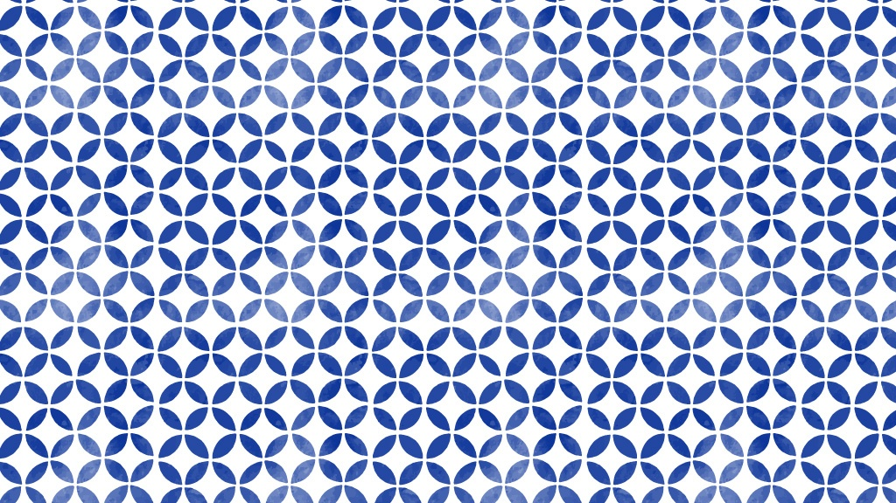

Supplied reference versus idealized flat vectors. Texture and historical attribution are outside this geometry correction.
| Supplied reference | Before | After |
|---|---|---|
 |
Before/after: unit 40 and the same colors. Reference is fit to panel; default densities differ.
Left: unit 28.5 approximates the reference spacing after downscaling; right: unit 120 shows tip gaps and circular negative spaces. This is not pixel-equivalence certification.